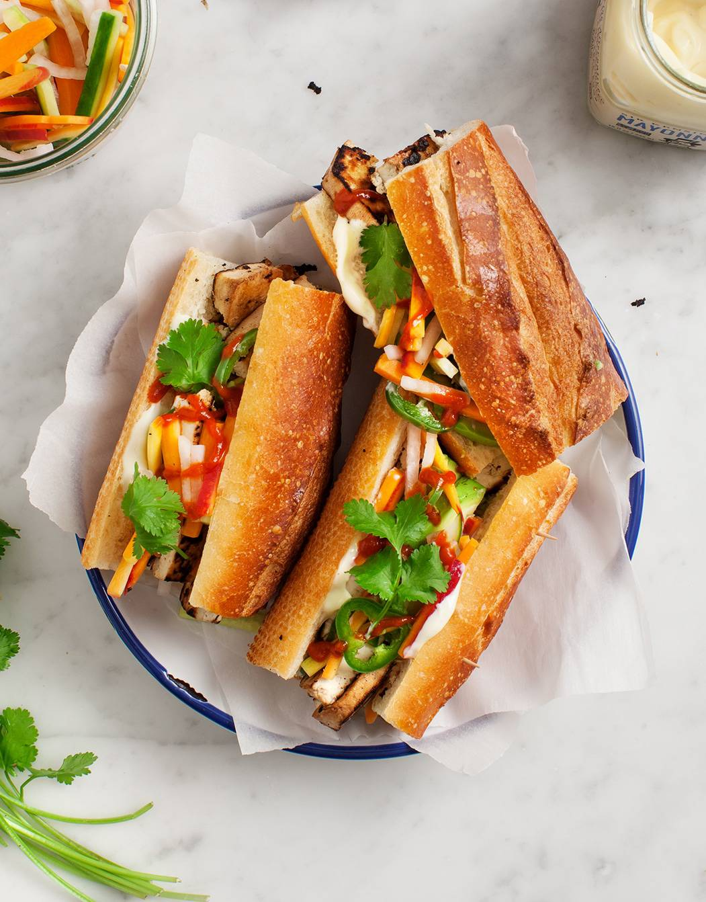

Banh Mi Sandwich

Bangin' Banh Mi Sammy recipe
This yummy banh mi recipe is a vegetarian version of the popular Vietnamese sandwich.
I stuff it with seared tofu, pickled carrots and daikon, cucumbers, jalapeños, and more!
Ingredients
- Baguette - Look for soft baguette with a lightly crisp exterior.
If it's too chewy or crusty, the fillings will squish out of the sandwich!
- Seared Marinated Tofu - The “meat” of this sandwich. I marinate firm tofu in a blend of tamari or
soy sauce, lime juice and zest, garlic, ginger, and black pepper. It's super savory and bright. Yum!
- Pickled Vegetables - These guys are key for giving a banh mi its signature sweet and tangy flavor.
I pickle a combination of carrots, cucumber, jalapeño, and daikon in white wine vinegar, rice vinegar,
salt, and sugar. If you can't find daikon, red radishes taste great here too. And if you're sensitive
to spice, go easy on the jalapeño.
- Mayo - A banh mi essential! It adds a delicious richness to this fresh sandwich. To make this recipe
vegan, substitute your favorite store bought vegan mayo, or make your own.
- Sriracha - For extra heat.
- Cilantro - The perfect fresh finishing touch!
Directions
- Make ahead: Place the daikon, carrots, cucumbers, and jalapeños in a medium jar with the white wine vinegar,
rice vinegar, sugar, and salt. If the liquids don't cover the veggies, add about 2 tablespoons water and more vinegar
if necessary. Let chill for at least an hour, or store in the fridge for up to a week.
- Drain the tofu and slice it into 1/2-inch slices. Place it on a towel and gently pat dry to remove excess water.
- In a small bowl, whisk together the olive oil, tamari, lime juice and zest, garlic, ginger, and pepper.
- Place the tofu in a shallow pan and pour the marinade on top. Flip the tofu to fully coat it, adding more tamari if necessary. Let the tofu marinate for at least 15 minutes.
- Heat a nonstick skillet to medium-high heat. Add a little oil to the pan and place the tofu pieces with enough space
between each so that they're not too crowded, working in batches if necessary. Without moving the tofu slices around
too much, let them cook for a few minutes per side until they're deeply golden brown and caramelized around the edges.
Remove from heat and season to taste.
- Assemble sandwiches with the baguette, mayo, tofu slices, pickled veggies, and cilantro, and serve with sriracha.